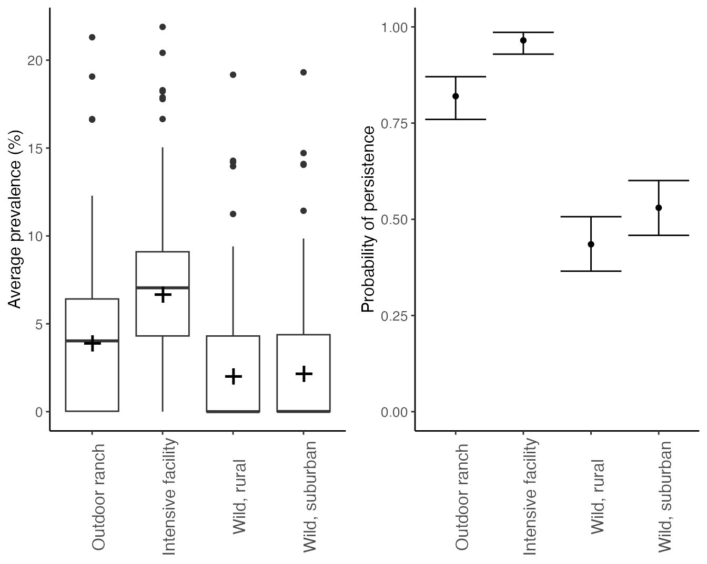
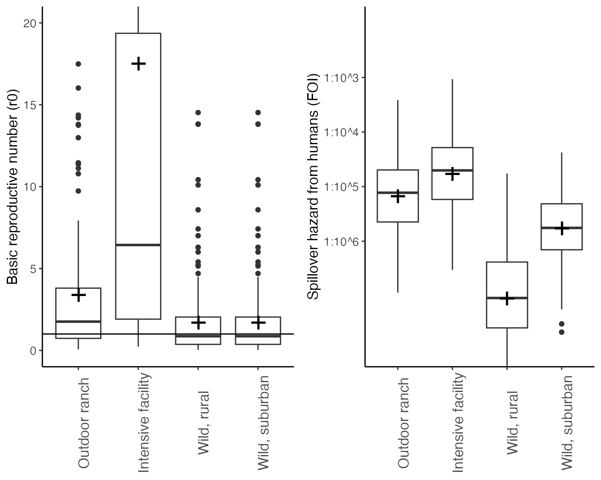
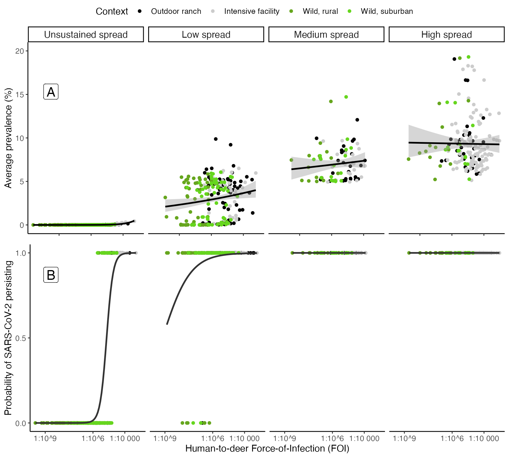
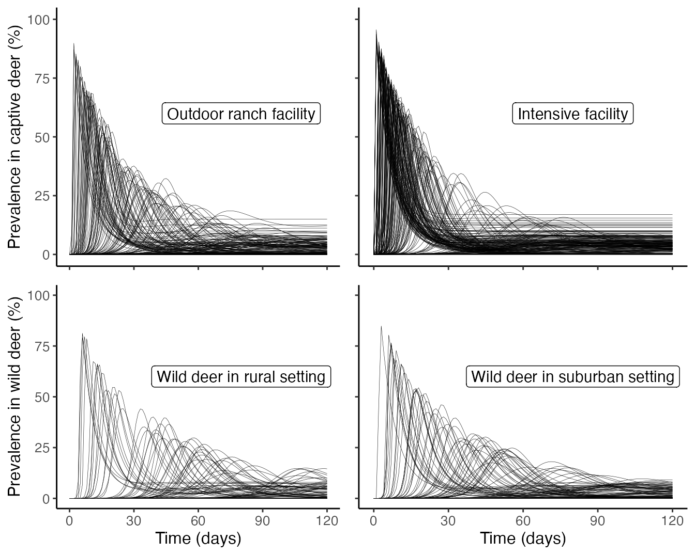

Summarize introduction, spread, prevalence, and persistence
Source:vignettes/Visualize_by_context.Rmd
Visualize_by_context.RmdIntroduction
Now that we have a dataset from our simulations, we can begin to visualize how various characteristics of outbreaks differ between contexts. These figures are used in the published results. Here, we load the dataset and remind R how many iterations were run in each context (nsamples).
df <- whitetailedSIRS::example_results
nsamples <- 200Prevalence and Persistence
ggplot(df, aes(x = Context, y = Prevalence*100)) +
geom_boxplot()+
stat_summary(fun=mean, geom="point", shape="+", size=8) +
theme_classic()+
scale_y_continuous("Average prevalence (%)")+
theme(axis.text = element_text(size = 10), axis.title = element_text(size = 12),legend.text = element_text(size = 12), legend.title = element_text(size = 14), strip.text.x = element_text(size = 14), axis.title.x = element_blank(), axis.text.x = element_text(angle = 90, size = 12)) -> prevalence
#plot persistence
group_by(df, Context) %>%
summarize(., Persistence = sum(Persist)) %>%
mutate(LCL = binom.confint(Persistence, n = nsamples, methods = "exact")$lower, pred = binom.confint(Persistence, n = nsamples, methods = "exact")$mean ,UCL = binom.confint(Persistence, n = nsamples, methods = "exact")$upper) %>%
mutate(Context = factor(Context, levels = c("Outdoor ranch", "Intensive facility", "Wild, rural","Wild, suburban"))) %>%
ggplot(., aes(x = Context, y = pred))+
geom_point()+
geom_errorbar(aes(ymin = LCL, ymax = UCL))+
scale_fill_grey()+
theme_classic()+
scale_y_continuous("Probability of persistence", limits = c(0,1))+
theme(axis.text = element_text(size = 10), axis.title = element_text(size = 12),legend.text = element_text(size = 12), legend.title = element_text(size = 14), strip.text.x = element_text(size = 14), axis.title.x = element_blank(), axis.text.x = element_text(angle = 90, size = 12)) -> persistence
ggplot(df, aes(x = Context, y = Cumulative_infections*100)) +
geom_boxplot()+
stat_summary(fun=mean, geom="point", shape="+", size=8) +
theme_classic()+
scale_y_continuous("Cumulative infections (%)")+
theme(axis.text = element_text(size = 10), axis.title = element_text(size = 12),legend.text = element_text(size = 12), legend.title = element_text(size = 14), strip.text.x = element_text(size = 14), axis.title.x = element_blank(), axis.text.x = element_text(angle = 90, size = 12)) -> cumulative_infections
ggpubr::ggarrange(prevalence, persistence,cumulative_infections,nrow =1, ncol=3)
Strength of introduction (FOI) and spread (R0)
#plot r0
ggplot(df, aes(x = Context, y = r0)) +
geom_boxplot()+
stat_summary(fun=mean, geom="point", shape="+", size=8) +
theme_classic()+
geom_hline(yintercept = 1)+
coord_cartesian(ylim = c(0,20))+
scale_y_continuous("Basic reproductive number (r0)")+
theme(axis.text = element_text(size = 10), axis.title = element_text(size = 12),legend.text = element_text(size = 12), legend.title = element_text(size = 14), strip.text.x = element_text(size = 14), axis.title.x = element_blank(), axis.text.x = element_text(angle = 90, size = 12)) -> r0
#plot FOI
ggplot(df, aes(x = Context, y = log10(FOI))) +
geom_boxplot()+
stat_summary(fun.y=mean, geom="point", shape="+", size=8) +
theme_classic()+
coord_cartesian(ylim = c(-8,-2))+
scale_y_continuous("Introduction hazard from humans (FOI)", breaks = c(-6,-5,-4,-3), labels = c("1:10^6","1:10^5", "1:10^4", "1:10^3"))+
theme(axis.text = element_text(size = 10), axis.title = element_text(size = 12),legend.text = element_text(size = 12), legend.title = element_text(size = 14), strip.text.x = element_text(size = 14), axis.title.x = element_blank(), axis.text.x = element_text(angle = 90, size = 12)) -> FOI
ggpubr::ggarrange(r0, FOI,nrow =1, ncol=2) ## Initial vs continual introduction
df_initial_1_in_1000 <- whitetailedSIRS::initial_infection_results_1_in_1000
df_initial_1_in_1000$introduction <- "Initial introduction 1 in 1,000"
df_initial_1_in_1mil <- whitetailedSIRS::initial_infection_results_1_in_1mil
df_initial_1_in_1mil$introduction <- "Initial introduction 1 in 1 million"
df_initial_1_in_1bil <- whitetailedSIRS::initial_infection_results_1_in_1bil
df_initial_1_in_1bil$introduction <- "Initial introduction 1 in 1 billion"
df %>%
mutate(introduction = "Continuous introduction") %>%
select(., -FOI) %>%
rbind(.,df_initial_1_in_1000, df_initial_1_in_1mil, df_initial_1_in_1bil) %>%
mutate(., introduction = factor(introduction, levels = c("Continuous introduction", "Initial introduction 1 in 1,000", "Initial introduction 1 in 1 million", "Initial introduction 1 in 1 billion"))) %>%
ggplot(., aes(x = introduction, y = Prevalence)) +
geom_boxplot() +
facet_grid(Context ~ .)+
scale_x_discrete(labels = function(x)
stringr::str_wrap(x, width = 20)) +
scale_y_continuous(name = "Average prevalence (%)")+
theme_classic()+
theme(axis.text = element_text(size = 10), axis.title = element_text(size = 12),strip.text.y = element_blank(), axis.title.x = element_blank())-> prevalence.intro.diff
df %>%
mutate(introduction = "Continuous introduction") %>%
select(., -FOI) %>%
rbind(.,df_initial_1_in_1000, df_initial_1_in_1mil, df_initial_1_in_1bil) %>%
mutate(., introduction = factor(introduction, levels = c("Continuous introduction", "Initial introduction 1 in 1,000", "Initial introduction 1 in 1 million", "Initial introduction 1 in 1 billion"))) %>%
ggplot(., aes(x = introduction, y = Cumulative_infections*100)) +
geom_boxplot() +
facet_grid(Context ~ .)+
scale_x_discrete(labels = function(x)
stringr::str_wrap(x, width = 20)) +
scale_y_continuous(name = "Cumulative infections (%)")+
theme_classic()+
theme(axis.text = element_text(size = 10), axis.title = element_text(size = 12),strip.text.y = element_text(size = 14), axis.title.x = element_blank())-> Cumulative.intro.diff
df %>%
mutate(introduction = "Continuous introduction") %>%
select(., -FOI) %>%
rbind(.,df_initial_1_in_1000, df_initial_1_in_1mil, df_initial_1_in_1bil) %>%
mutate(., introduction = factor(introduction, levels = c("Continuous introduction", "Initial introduction 1 in 1,000", "Initial introduction 1 in 1 million", "Initial introduction 1 in 1 billion"))) %>%
group_by(., Context, introduction) %>%
summarize(., Persistence = sum(Persist)) %>%
mutate(LCL = binom.confint(Persistence, n = nsamples, methods = "exact")$lower, pred = binom.confint(Persistence, n = nsamples, methods = "exact")$mean ,UCL = binom.confint(Persistence, n = nsamples, methods = "exact")$upper) %>%
ggplot(., aes(x = introduction, y = pred)) +
geom_point()+
geom_errorbar(aes(ymin = LCL, ymax = UCL))+
scale_fill_grey()+
theme_classic()+
scale_y_continuous("Probability of persistence", limits = c(0,1))+
facet_grid(Context ~ .)+
scale_x_discrete(labels = function(x)
stringr::str_wrap(x, width = 20)) +
theme_classic()+
theme(axis.text = element_text(size = 10), axis.title = element_text(size = 12),strip.text.y = element_blank(), axis.title.x = element_blank())-> Persist.intro.diff
#> `summarise()` has grouped output by 'Context'. You can override using the
#> `.groups` argument.
ggpubr::ggarrange(prevalence.intro.diff, Persist.intro.diff, Cumulative.intro.diff, nrow = 1, ncol = 3)
Interaction between strengths of introduction and spread, and prevalence and persistence.
#Composite plot showing how R0 and FOI interact to impact prevelence
df %>%
mutate(., r0_bin = case_when(r0 <= 1 ~ "Unsustained spread",
r0 > 1 & r0 <= 3 ~ "Low spread",
r0 > 3 & r0 <= 5 ~ "Medium spread",
r0 > 5 ~ "High spread"),
r0_bin = factor(r0_bin, levels = c("Unsustained spread","Low spread","Medium spread","High spread"))) %>%
ggplot(., aes(log10(FOI),Prevalence*100))+
geom_point(aes(color = Context))+
facet_grid(.~r0_bin)+
scale_color_manual(values = c("black","gray80", "#66A61E","#66D61E"))+
stat_smooth(method = "glm", method.args = list(family=quasi(link='log')), formula = y~x, color = "black")+
scale_y_continuous(name = "Average prevalence (%)", limits = c(0,20))+
theme_classic()+
theme(strip.text = element_text(size = 12),
axis.text.x = element_blank(),
axis.title.x = element_blank(),
axis.title.y = element_text(size = 12),axis.text.y = element_text(size = 10), legend.text = element_text(size=10), legend.title = element_text(size=12)) -> Prevalence.plot
df %>%
mutate(., r0_bin = case_when(r0 <= 1 ~ "Unsustained spread",
r0 > 1 & r0 <= 3 ~ "Low spread",
r0 > 3 & r0 <= 5 ~ "Medium spread",
r0 > 5 ~ "High spread"),
r0_bin = factor(r0_bin, levels = c("Unsustained spread","Low spread","Medium spread","High spread"))) %>%
ggplot(., aes(log10(FOI),as.numeric(Persist)))+
geom_point(aes(color = Context))+
scale_color_manual(values = c("black","gray80", "#66A61E","#66D61E"))+
facet_grid(.~r0_bin)+
stat_smooth(method = "glm",method.args = list(family = "binomial"), se = F, color = "gray20")+
scale_y_continuous(name = "Probability of persistence", limits = c(0,1), breaks = c(0,0.5,1))+
theme_classic()+
theme(strip.text = element_text(size = 12),
axis.text.x = element_blank(),
axis.title.x = element_blank(),
axis.title.y = element_text(size = 12),axis.text.y = element_text(size = 10), legend.text = element_text(size=10), legend.title = element_text(size=12)) -> Persistence.plot
df %>%
mutate(., r0_bin = case_when(r0 <= 1 ~ "Unsustained spread",
r0 > 1 & r0 <= 3 ~ "Low spread",
r0 > 3 & r0 <= 5 ~ "Medium spread",
r0 > 5 ~ "High spread"),
r0_bin = factor(r0_bin, levels = c("Unsustained spread","Low spread","Medium spread","High spread"))) %>%
ggplot(., aes(log10(FOI),Cumulative_infections*100))+
geom_point(aes(color = Context))+
facet_grid(.~r0_bin)+
scale_color_manual(values = c("black","gray80", "#66A61E","#66D61E"))+
stat_smooth(method = "glm", method.args = list(family=quasi(link='log')), formula = y~x, color = "black")+
scale_y_continuous(name = "Cumulative infections (%)")+
scale_x_continuous(name = "Introduction hazard from humans (FOI)", breaks = c(-9,-6,-4), labels = c("1:10^9","1:10^6","1:10 000"))+
theme_classic()+
theme(strip.text = element_text(size = 12),
axis.title.y = element_text(size = 12),axis.text = element_text(size = 10), legend.text = element_text(size=10), legend.title = element_text(size=12)) -> Cumulative.plot
ggpubr::ggarrange(Prevalence.plot, Persistence.plot, Cumulative.plot,nrow =3, ncol=1, common.legend = T)+
annotate("label", x = 0.1, y = .85, label = "A", fill = "white", size = 6) +
annotate("label", x = 0.1, y = .55, label = "B", fill = "white", size = 6) +
annotate("label", x = 0.1, y = .25, label = "C", fill = "white", size = 6)